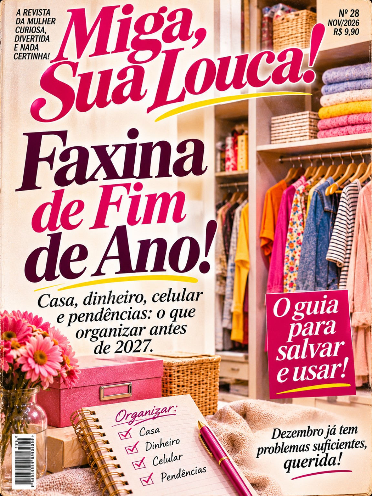
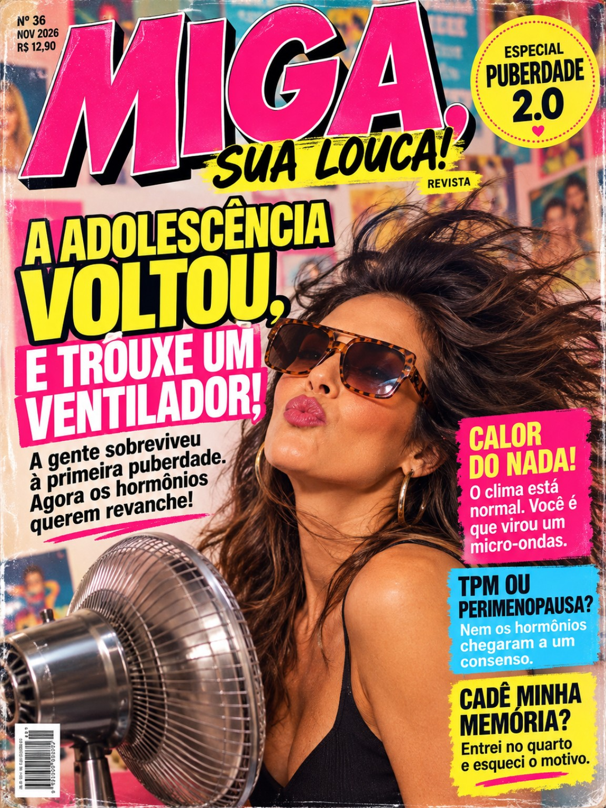
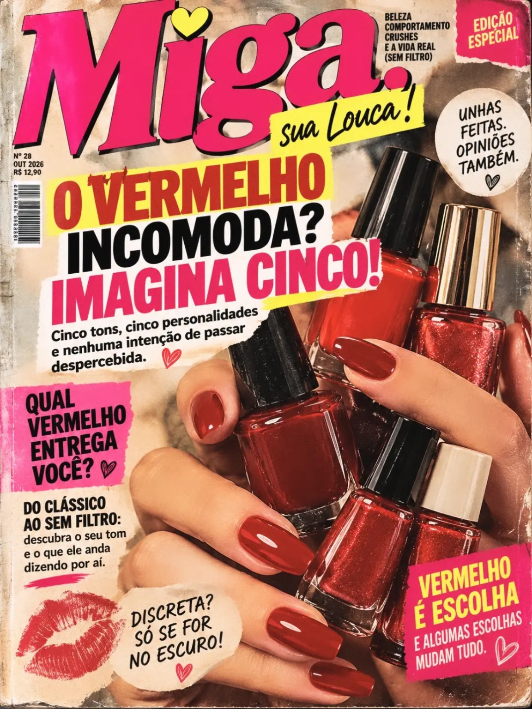
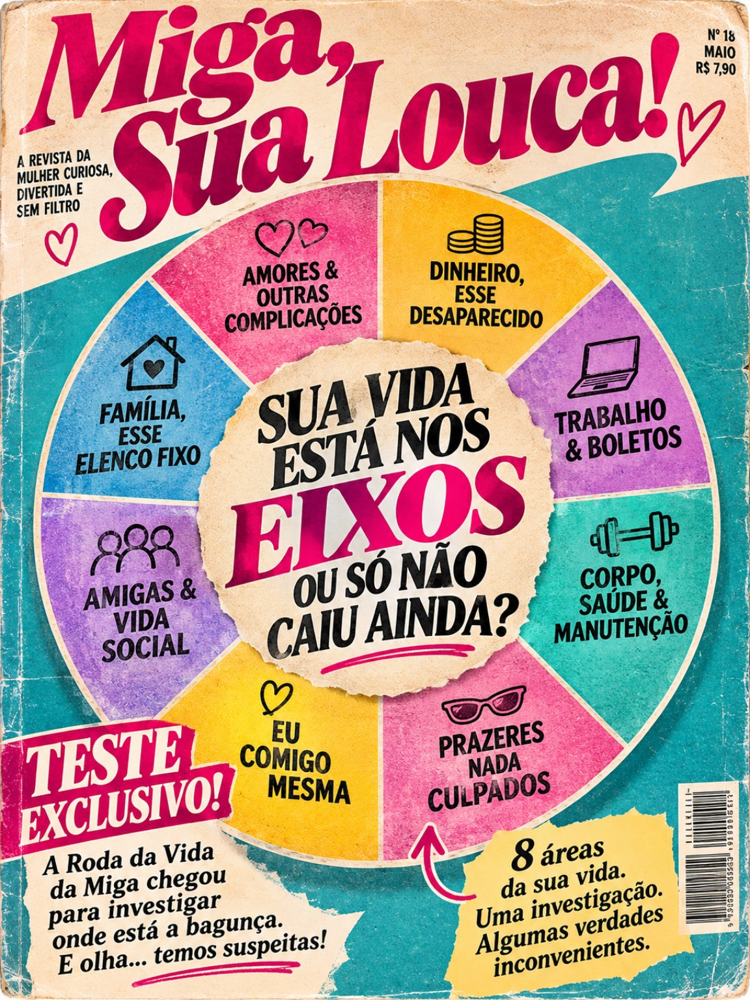

REVISTA DIGITAL
MIGA
Sua Louca!
Tem coisa que só uma revista entende.
Escolha uma capa e folheie
Homem bonito dá trabalho?
Comportamento · 5 páginas

Faxina de Fim de Ano
Organização e humor · 6 páginas
Rosa-Choque, Meu Primeiro Amor!
Moda e verão · 5 páginas
Bonita, Cheirosa e Perigosamente Parcelada!
Beleza e humor · 4 páginas
Ninguém Sabe o Que Está Fazendo!
Vida adulta · 4 páginas

A Adolescência Voltou!
Comportamento · 6 páginas

O Vermelho Incomoda?
Beleza · 5 páginas
Cadê a Pulseirinha do Reggae?
Nostalgia · 5 páginas
Salvei pra Ver Depois
Humor · 5 páginas

Sua Vida nos Eixos
Comportamento · 5 páginas
MIGA, SUA LOUCA!
Ampliar
Fechar ×
← Anterior
Próxima →